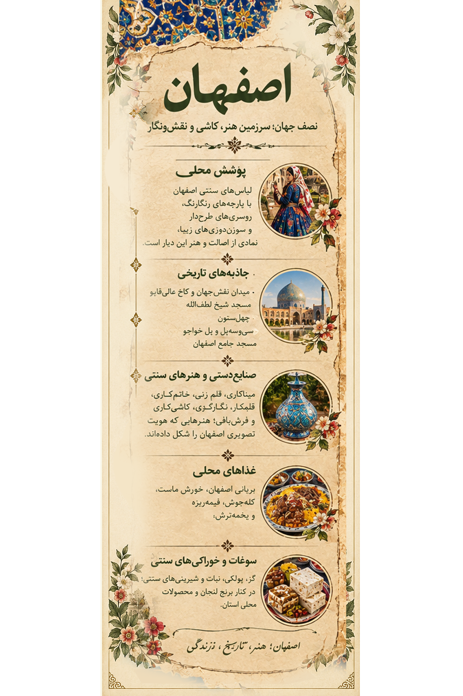

۱. تصویر اصفهان؛ روایت یک سرزمین1. Isfahan in Art: A Land's Story
این اثر هنری، جلوههایی از هویت اصفهان را در کنار هم قرار میدهد؛ از میدان نقشجهان و پلهای تاریخی تا کاشیکاریهای فیروزهای، بازارهای سنتی، صنایعدستی و خوراکهای محلی. رنگها و نقشها، روایتی تصویری از پیوند هنر و زندگی در این سرزمیناند.This artwork brings together aspects of Isfahan's identity, from Naqsh-e Jahan Square and historic bridges to turquoise tiles, traditional bazaars, handicrafts and local food. Its colors and patterns tell a visual story of art and everyday life.

اثر هنری اصفهان از مجموعه «ایران، هزار رنگ»The Isfahan artwork from “Iran, A Thousand Colors”
این تصویر، اثر هنری مجموعه است؛ توضیحات این صفحه برای معرفی فرهنگی و تاریخی استان اصفهان ارائه شدهاند.This is the artwork created for the collection. The text on this page provides cultural and historical context about Isfahan Province.
۲. پوشش زنان اصفهان؛ رنگ و اصالت2. Women's Dress in Isfahan: Color and Heritage
پوشاک زنان در استان اصفهان یکدست نیست و در طول زمان، با توجه به محل زندگی، گروه فرهنگی، شرایط اجتماعی و مناسبتها تغییر کرده است. نگارههای تاریخی و پوشاک محلی روستاها، بخشی از این تنوع فرهنگی را نشان میدهند.Women's clothing in Isfahan Province is diverse and has changed over time according to location, cultural group, social conditions and occasion. Historical illustrations and village clothing traditions reveal part of this cultural diversity.

لیبل اختصاصی اصفهان؛ راهنمای تصویری پوشش و فرهنگ منطقهIsfahan exhibition label: a visual guide to regional dress and culture
پوشاک تاریخی شهر اصفهانHistorical Clothing of Isfahan City
نگارهها و اسناد تاریخی، نمونههایی از پیراهنهای بلند، پوشش سر، چادرها و پارچههای آراسته را در دورههای مختلف نشان میدهند. این تصاویر برای شناخت تاریخ پوشاک اهمیت دارند، اما نباید آنها را نمایندهٔ پوشش همهٔ زنان امروز اصفهان دانست.Historical illustrations and documents show long dresses, head coverings, chadors and decorated fabrics from different periods. These sources help us understand clothing history but should not be treated as representative of all Isfahani women today.
پوشش محلی ابیانهTraditional Dress of Abyaneh
ابیانه، روستایی تاریخی در استان اصفهان، به پوشش محلی متمایز زنانش شناخته میشود. چارقدهای سفید با نقشهای گلدار و دامنهای پرچین از ویژگیهای شناختهشدهٔ این پوششاند. شکل و جزئیات لباس ممکن است با توجه به نسل، مناسبت و شیوهٔ استفاده تفاوت داشته باشد.Abyaneh, a historic village in Isfahan Province, is known for its distinctive women's clothing. White floral headscarves and full gathered skirts are notable features. Details may vary by generation, occasion and use.
۳. شهرها و روستاها؛ تنوع در دل اصفهان3. Cities and Villages: Isfahan's Diversity
استان اصفهان از شهرهای تاریخی، روستاهای کهن، نواحی کوهستانی و چشماندازهای کویری تشکیل شده است. هر منطقه با معماری، محصولات محلی، آیینها و شیوهٔ زندگی خود، بخشی از هویت فرهنگی استان را شکل میدهد.Isfahan Province includes historic cities, old villages, mountain areas and desert landscapes. Each region contributes to the province's cultural identity through its architecture, local products, traditions and way of life.
ابیانهAbyaneh
روستایی تاریخی با خانههای سرخرنگ، کوچههای پلکانی و پوشاک محلی متمایز که بخشی از میراث فرهنگی زندهٔ منطقه است.A historic village with red-earth houses, stepped lanes and distinctive traditional dress, forming part of the region's living cultural heritage.
ورزنهVarzaneh
منطقهای در شرق اصفهان با چشماندازهای کویری، سنتهای کشاورزی و نزدیکی به تالاب گاوخونی. پوشش سفید سر زنان ورزنه از ویژگیهای محلی شناختهشدهٔ آن است.An eastern Isfahan area known for desert landscapes, agricultural traditions and proximity to Gavkhouni wetland. Women's white head coverings are a distinctive local tradition.
چادگان و غرب استانChadegan and Western Isfahan
منطقهای با چشماندازهای کوهستانی، روستاها و فرهنگهای محلی متنوع که پیوند نزدیکی با طبیعت و زندگی روستایی دارد.An area of mountain landscapes, villages and diverse local cultures closely connected with nature and rural life.
۴. تاریخ، معماری و طبیعت4. History, Architecture and Nature
میدان نقشجهانNaqsh-e Jahan Square
مجموعهای تاریخی از دورهٔ صفوی که با مسجد امام، مسجد شیخ لطفالله، عمارت عالیقاپو و بازار پیرامونی شناخته میشود و در فهرست میراث جهانی یونسکو قرار دارد.A Safavid-era historic ensemble featuring Imam Mosque, Sheikh Lotfollah Mosque, Ali Qapu Palace and the surrounding bazaar. It is a UNESCO World Heritage Site.
سیوسهپل و پل خواجوSi-o-se-pol and Khaju Bridge
دو پل تاریخی بر زایندهرود که افزون بر نقش ارتباطی، از نمونههای برجستهٔ معماری و زندگی شهری اصفهاناند.Two historic bridges over the Zayandeh Rud, notable for their architecture and role in Isfahan's urban life.
کاخ چهلستونChehel Sotoun Palace
باغ و کاخی تاریخی با تالارها، نقاشیهای دیواری و انعکاس ستونها در حوض که از جلوههای هنر دورهٔ صفوی به شمار میرود.A historic palace and garden with halls, wall paintings and columns reflected in its pool, representing Safavid-era art.
طبیعت استان نیز از کوهستانهای غربی تا دشتها و نواحی کویری گسترده است. زایندهرود و تالاب گاوخونی از عناصر مهم جغرافیایی منطقهاند؛ وضعیت آب و محیط طبیعی آنها در دورههای مختلف تغییر کرده است.The province's landscapes range from western mountains to plains and deserts. The Zayandeh Rud and Gavkhouni wetland are important geographical features whose environmental conditions have changed over time.
۵. طعمهای اصیل اصفهان5. The Flavors of Isfahan
غذاها و شیرینیهای محلی، بخشی از فرهنگ مهماننوازی اصفهان هستند. برخی از آنها در سراسر ایران شناخته شدهاند و برخی دیگر بیشتر با سفرههای خانوادگی و بازارهای محلی پیوند دارند.Local dishes and sweets are part of Isfahan's hospitality traditions. Some are famous throughout Iran, while others are closely associated with family tables and local markets.
بریانی اصفهانIsfahani Beryani
غذای مشهور اصفهان که معمولاً با گوشت گوسفند تهیه و همراه نان و چاشنیهای محلی سرو میشود.Isfahan's famous dish, usually prepared with lamb and served with bread and local accompaniments.
خورش ماستKhoresht-e Mast
خوراکی سنتی با پایهٔ ماست و گوشت که با زعفران و شکر طعمی ویژه پیدا میکند و معمولاً سرد سرو میشود.A traditional yogurt-and-meat dish flavored with saffron and sugar, usually served cold.
حلیم بادمجانHalim Bademjan
غذایی تهیهشده از بادمجان، حبوبات و گوشت که در اصفهان و شهرهای دیگر ایران نیز محبوب است.A dish made with eggplant, legumes and meat, popular in Isfahan and other Iranian cities.
گزGaz
شیرینی شناختهشدهٔ اصفهان که در انواع مختلف و با مغزهایی مانند پسته و بادام تهیه میشود.Isfahan's famous nougat-like sweet, available in varieties with pistachios and almonds.
پولکیPoolaki
شیرینی نازک و شفاف که اغلب همراه چای مصرف میشود و از سوغات محبوب شهر است.A thin, translucent candy often enjoyed with tea and popular as a local souvenir.
نبات و شیرینیهای محلیRock Candy and Local Sweets
نبات و دیگر شیرینیهای سنتی در بازارهای اصفهان عرضه میشوند و بخشی از فرهنگ پذیرایی و سوغات شهر هستند.Rock candy and other traditional sweets are sold in Isfahan's markets and form part of its hospitality and souvenir culture.
۶. سوغات، محصولات بومی و صنایعدستی6. Souvenirs, Local Products and Handicrafts
میناکاریMinakari Enameling
هنر آراستن فلز با پوشش لعابی و نقشهای رنگین که از صنایعدستی شناختهشدهٔ اصفهان است.The art of decorating metal with enamel and colorful patterns, a well-known Isfahani craft.
قلمزنیGhalamzani Metal Engraving
هنری ظریف که در آن نقشها با ابزارهای مخصوص روی فلزاتی مانند مس و نقره حک میشوند.A delicate craft in which patterns are engraved on metals such as copper and silver.
خاتمکاریKhatamkari Inlay
هنر ساخت نقشهای هندسی ظریف با قطعات کوچک چوب و مواد دیگر که برای آراستن جعبهها و اشیای تزئینی به کار میرود.A craft that creates fine geometric patterns from small pieces of wood and other materials, decorating boxes and ornamental objects.
قلمکار و فرشبافیGhalamkar Printing and Carpet Weaving
قلمکار با چاپ نقشهای سنتی روی پارچه و فرشبافی با طرحها و رنگهای متنوع، بخشی از هنرهای نساجی منطقهاند.Ghalamkar uses traditional block printing on fabric, while carpet weaving features varied patterns and colors. Both are part of the region's textile arts.
محصولات باغی و محلیOrchard and Local Products
بسته به منطقه و اقلیم، محصولات باغی، خشکبار و فرآوردههای محلی در اقتصاد روستایی استان نقش دارند.Depending on local climate, orchard produce, dried fruits and regional products contribute to the province's rural economy.
۷. منابع و مطالعهٔ بیشتر7. Sources and Further Reading
منابع زیر برای آشنایی با آثار تاریخی، میراث فرهنگی و صنایعدستی اصفهان نقطهٔ شروع مناسبی هستند. برای جزئیات دقیق پوشاک محلی، بهتر است پژوهشهای مردمشناسی و منابع معتبر دربارهٔ هر روستا نیز بررسی شوند.The following resources are useful starting points for learning about Isfahan's historic sites, cultural heritage and handicrafts. Detailed information on local dress should also be checked against ethnographic research and reliable sources for each village.
- UNESCO — Meidan Emam, Esfahan ؛ میدان نقشجهان
- UNESCO — The Persian Garden ؛ باغ فین و سنت باغسازی ایرانی
- UNESCO World Heritage Centre
- Encyclopaedia Iranica
- Visit Iran
ذکر منابع به معنی تأیید تکتک جزئیات این صفحه از سوی آنها نیست؛ برای نسبتدادن یک نوع پوشش مشخص به جامعهای محلی، منبع تخصصی جداگانه لازم است.Listing these resources does not mean they verify every detail on this page. Specific clothing attributions require dedicated references.